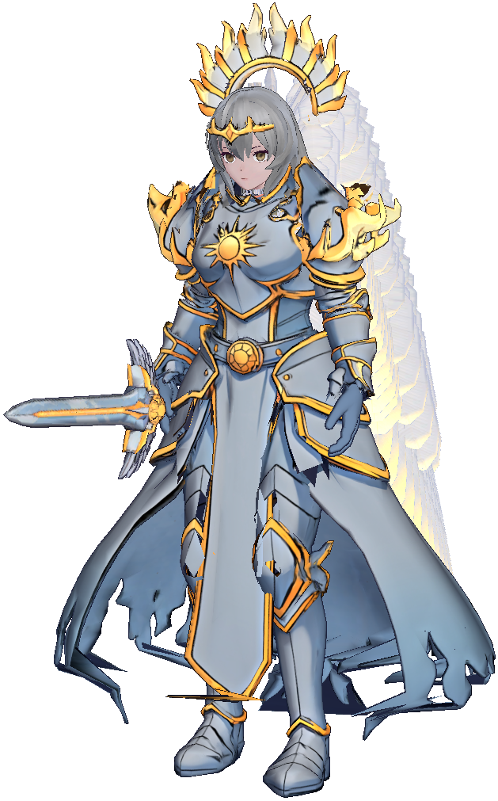

CelestialNarrator
The High Seraphim
First among the Celestials who stayed. She summoned you, and swore to send you home. You will find her in the Cathedral of the Dawn.
"The dawn still burns, and while it burns, I keep watch."